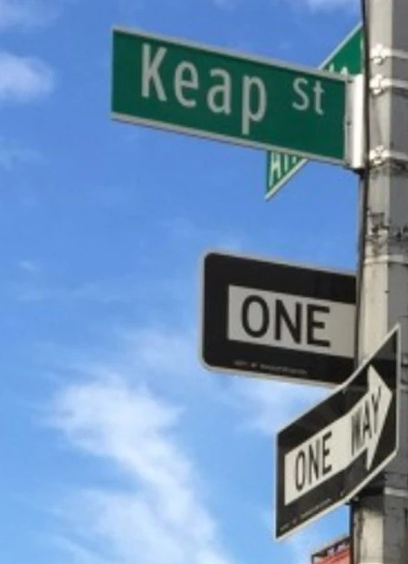
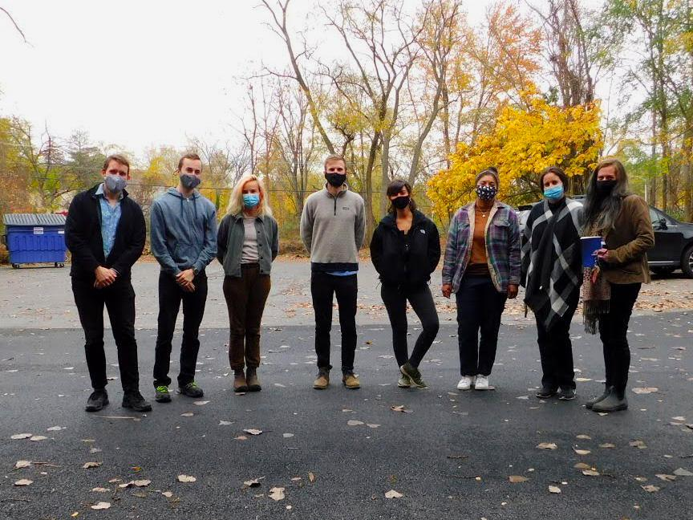

ONCE UPON A CANDLE…
KEAP WAS BORN FROM A PHILOSOPHICAL QUESTION: IN AN
ALWAYS-ON WORLD, HOW CAN WE RECONNECT WITH OURSELVES
AND RESTORE OUR BALANCE WITH NATURE?
When we moved to Brooklyn, candles became our favored way to
unwind from the crowds, commutes, and chaos. They
represented the antithesis of our work lives in cubicles, glued to
phone screens, chasing made-up deadlines and quarterly targets.
As we saw ourselves and others grow increasingly disconnected
from the world around us —from nature, from our loved ones, and
even from ourselves—we wondered how different things might
look if more people took the time to light a candle each evening.

Inspired, we rolled up our sleeves, took perfumery classes, and
toured factories. We saw the potential to create a candle that
stood for something far greater than itself.
With a commitment to this idea, we are proud to now offer a
candle that is masterfully scented, virtually zero-waste, and
helping build towards a regenerative future.
Together with a thriving community of Keapers, we are excited to
bring more presence, more connection, and more light into the
world.
We hope you join us!
Keap the fire burning,
Steve & Harry

REGENERATE THE PLANET
Join us on a mission to create lasting benefits
for our planet and all its people.
ZERO WASTE
We are working to remove all waste from our
business.